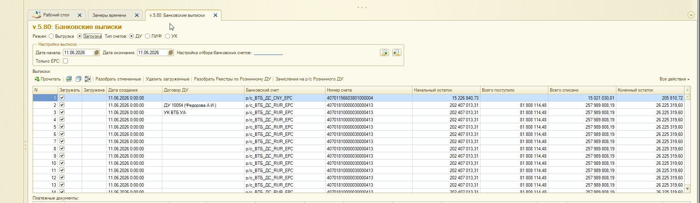
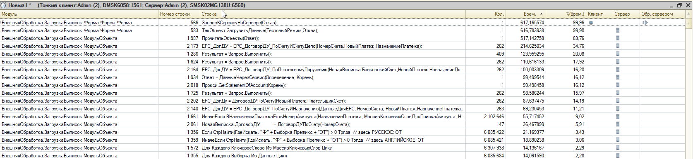
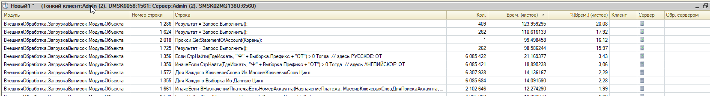
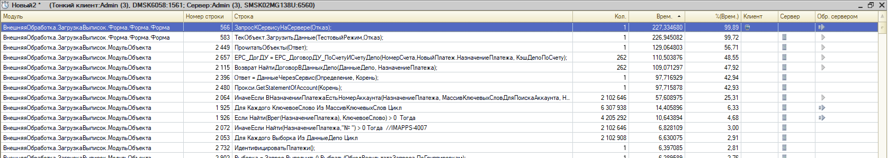
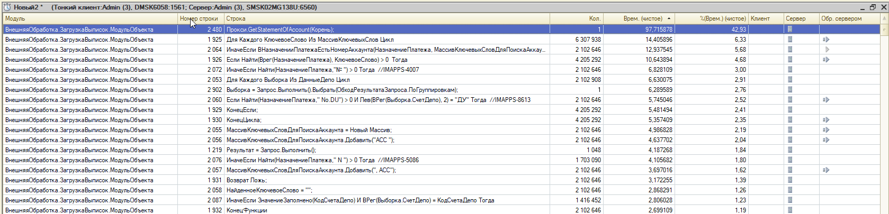
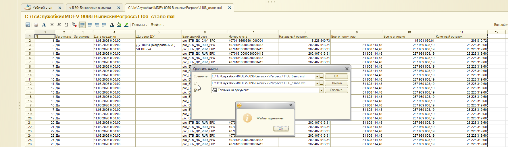

IMDEV-9096: результаты оптимизации контура «Прочитать»
Задача: оптимизация загрузки банковских выписок в Wim_Du. EPF:v.5.90, ветка erf_Оптимизация_Тест1. OPT: OPT-02, OPT-17, OPT-05, OPT-18. Источник замеров:ОптимизацияЧтения_БылоСталоРегресс.docx
1. Введение
Сравнение выполнено по сценарию кнопки Прочитать за 1 день на тестовой базе WIM_DU
(дата 11.06.2026). Оптимизации сведены к пакетным кэшам и улучшению алгоритмов ЕРС в ПрочитатьОбъекты.
Пакетный кэш ЗаполнитьКэшДоговоровДУПоСчетам — 1 SQL на ответ
OPT-17
ЕРС_ДоговорДУ_ПоСчетуИСчетуДепо
Ленивый кэш КэшДепоПоСчету — 1 SQL на уникальный счёт
OPT-05
ЕРС_ДоговорДУ_ПоПлатежномуПоручению
Кэш КэшПП / ПолучитьПлатежныеПорученияОкна — 1 SQL на (счёт, день)
OPT-18
ЕРС_ДоговорДУ_ПоСчетуИНазначению
Карта префиксов ПостроитьКартуПрефиксовЕРС вместо миллионов СтрНайти
3. Технология замера
Платформа: 1С:Предприятие 8.3, замер отладчика по времени выполнения.
Сценарий: форма загрузки выписок, режим «Загрузка», тип «ДУ», период 1 день.
База:Srvr="localhost";Ref="WIM_DU"; без авторизации.
Было:erf_Оптимизация (версия 5.80).
Стало:erf_Оптимизация_Тест1 (версия 5.90).
Регресс: выгрузка ТЧ «Выписки» в MXL, сравнение по мультимножеству бизнес-ключей.
4. Статистика
ПрочитатьОбъекты БЫЛО
517.14 с
ПрочитатьОбъекты СТАЛО
129.06 с
Итого по документу
617 → 237 с
Ускорение
2.60x
Регресс multiset
OK
Строк MXL
387 / 387
Ускорение сценария «Прочитать»: 617 с -> 237 с (2.60x)
5. Скриншоты тестов

Сценарий теста: форма загрузки, ДУ, 11.06.2026 (1 день)

БЫЛО (v5.80): замер верхнего уровня - 617 с, ПрочитатьОбъекты 517 с

БЫЛО: топ SQL (стр. 1286, 1624, 1725) и циклы СтрНайти по префиксам ЕРС

СТАЛО (v5.90): замер верхнего уровня - 237 с, ПрочитатьОбъекты 129 с

СТАЛО: детализация - SQL 1286/1624/1725 ушли из топа; остались циклы ЕРС

Регресс MXL: сравнение 1106_было.mxl и 1106_стало.mxl - файлы идентичны
6. Детали замеров
6.1. БЫЛО (топ детализации)
Строка
Код
Вызовы
Время, с
%
1987
ПрочитатьОбъекты(Ответ)
1
517.14
76
1286
Результат = Запрос.Выполнить()
409
123.96
08
1624
Результат = Запрос.Выполнить()
262
110.62
92
2018
Прокси.GetStatementOfAccount(Корень)
1
99.50
12
1725
Результат = Запрос.Выполнить()
262
98.59
97
6.2. СТАЛО (топ детализации)
Строка
Код
Вызовы
Время, с
%
2449
ПрочитатьОбъекты(Ответ)
1
129.06
71
2480
Прокси.GetStatementOfAccount(Корень)
1
97.72
93
6.3. Сравнение ключевых операций
Операция
БЫЛО, с
СТАЛО, с
Delta
ПрочитатьОбъекты
517.14
129.06
-388.08 с
ДоговорДУПоСчету / SQL 1286
123.96
-
-123.96 с
ЕРС депо / SQL 1624
110.62
-
-110.62 с
ЕРС ПП / SQL 1725
98.59
-
-98.59 с
7. Регресс MXL (1106_было vs 1106_стало)
Мультимножество по ключу (Дата, НомерСчета, Договор, Банк, N):
0 расхождений.
Позиционные отличия: 0 из 387.
Критерий приёмки: сравнивать мультимножество бизнес-ключей, а не индекс строки.
Перестановка строк внутри одного ЕРС-блока при неизменном составе договоров допустима.
Скрипт сравнения: Регресс/compare_mxl.py.
Позиционные отличия не обнаружены.
8. Выводы
Итог: контур «Прочитать» ускорен примерно в 2.60x;
функциональный регресс по MXL пройден (387/387 строк, 0 расхождений).
Производительность:ПрочитатьОбъекты — 517.14 с -> 129.06 с;
итог сценария — 617 с -> 237 с.
Причина ускорения: три повторяющихся SQL (стр. 1286, 1624, 1725) заменены пакетными кэшами;
поиск договора по назначению платежа переведён на карту префиксов.
Регресс: мультимножество по ключу (Дата, НомерСчета, Договор, Банк, N) — функционально идентично;
позиционных отличий: 0 из 387.
Остаточные узкие места: вызов сервиса GetStatementOfAccount (~98 с) и циклы ЕРС
по ключевым словам в назначении платежа — кандидаты на следующую итерацию.
Не в scope: кнопка «Разобрать» (КлиентБанк), фоновая массовая загрузка — отдельные замеры.